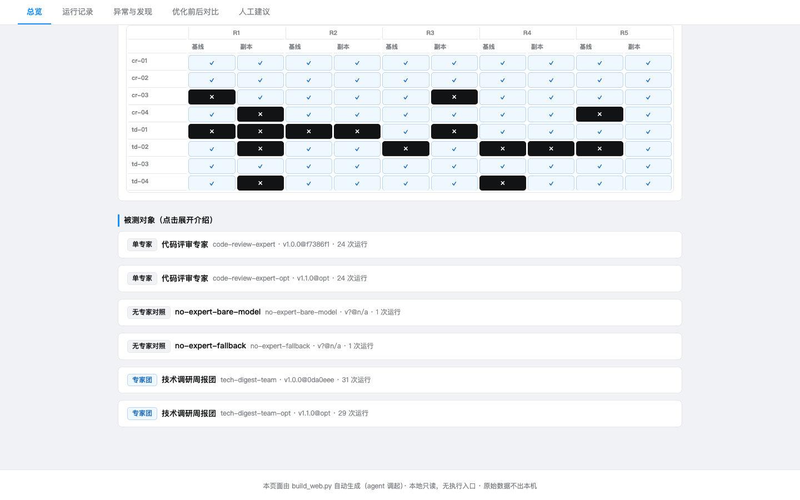
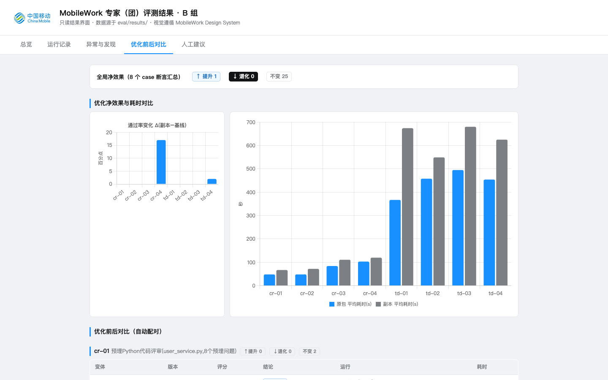

Eval System for Multi-Agent Experts
When an AI expert misbehaves, what is broken — the prompt, the workflow, or the model? I built the measurement layer that answers that, and proves fixes actually work.当 AI 专家系统表现异常，问题出在 Prompt、工作流还是模型？我搭建了回答这个问题的度量层，并证明修复真的有效。
- 80 Formal runs (retries archived separately)正式运行（重试单独归档）
- 8 Eval cases across 3 task types评测 case · 三类任务
- 0 Regressions in 20 retests20 次复测零退化
- ±13% Pass-rate swing from judge protocol alone判官协议单独造成的通过率摆幅
The problem问题
Expert systems — single agents and multi-agent expert teams, each an LLM wrapped with tools and a workflow — were being built for the platform. Ship date was close, but quality was judged by feel: is this expert good? Did the prompt fix help? Nobody could answer with data.平台正在开发“专家系统”：单专家与多智能体专家团，每个都是 LLM 包裹工具与工作流的 agent。上线在即，但质量验收全凭体感——这个专家好不好？改了 Prompt 有没有变好？没有人能拿数据回答。
Evaluating agent systems has three traps. Open-ended outputs resist automatic grading: a research digest has no single correct answer. High run-to-run variance means one run proves nothing. And “it improved” carries a proof burden — numbers measured under different conditions are not comparable.Agent 系统评测有三坑。开放式输出没法自动判分：调研简报没有唯一正确答案。运行方差大：同一配置重跑结果不同，单次运行说明不了什么。而“提升了”自带证明负担：优化前后不同条件下跑出的数字不可比。
So this project is not a scoring tool. It is an acceptance system: make expert quality comparable, failures attributable, and improvements provable.所以这个项目不是“跑分工具”，而是验收体系：让专家质量可比、失败可归因、优化效果可证明。
The evaluation design评测设计
An 8-case matrix with per-shape metrics. Two subjects (single expert, expert team) × four cases each, spanning three task shapes: structured, hybrid, and open-ended. The primary metric follows the task shape — assertion pass rate, defect-detection F1, or rubric pass rate. Forcing one metric onto different task natures was never on the table.8 案例矩阵，指标跟着任务形态走。两个被测对象（单专家 / 专家团）各 4 个 case，覆盖结构化、混合式、开放式三类任务形态；主指标分别取断言通过率、缺陷检出 F1、rubric 通过率——不为不同性质的任务硬套同一个指标。
Execution with an evidence chain. Promptfoo drives execution and scoring under a frozen environment (model and toolchain versions pinned). Every run archives its main and sub sessions, tool calls, permission decisions, and token spend — any conclusion can be traced back to the raw session. Failures and retries are archived separately and never mixed into the formal statistics.带证据链的执行。Promptfoo 驱动执行与评分，环境冻结（模型与工具链版本钉死）。每次运行的主子会话、工具调用、权限决策、token 消耗全部按规范留档——任何结论都能回溯到原始会话。失败与重试单独归档，绝不混入正式统计。
The optimization loop. Attribute from per-case evidence, locate the defect (prompt or workflow), ship a versioned optimized copy, re-test under the identical cases, model, and environment, and accept only when guardrail metrics hold.优化闭环。从逐 case 证据归因，定位缺陷（Prompt 或工作流），生成带版本号的优化副本，在相同 case、相同模型、相同环境下复测，护栏指标无退化才验收。

Key decisions, and what I ruled out关键决策，以及被否掉的方案
-
1 · Mixed grading, not all-LLM-judge1 · 混合判分，而不是全 LLM 裁判
Structured tasks are graded by deterministic assertions (programmatic checks); only open-ended tasks go to an LLM judge with a verbatim rubric plus human spot-checks. Ruled out: all-LLM-as-judge — convenient, but it hands auditability over to the judge's randomness, and judge biases (longer answers, self-model preference) would contaminate every conclusion.结构化任务用确定性断言（程序化校验）判分；只有开放式任务才交给 LLM 裁判，配逐字 rubric 加人工抽查。被否方案：全 LLM-as-judge——省事，但把可复核性拱手让给裁判的随机性，判官偏差（偏好长回答、偏好自家模型输出）会污染所有结论。
-
2 · Same-condition retest, or the gain is not credible2 · 同条件复测，否则提升不可信
Optimized copies and baselines run 5 times each under identical cases, model version, and toolchain, with team-level guardrail metrics watched in parallel. Ruled out: comparing against live numbers after the change — environment drift and run variance manufacture fake improvements.优化副本与基线在相同 case、相同模型版本、相同工具链下各跑 5 次，同时监控专家团层面的护栏指标。被否方案：改完直接对比线上数字——环境漂移和运行方差会制造虚假提升。
-
3 · Report significance honestly, including the ugly parts3 · 统计显著性如实报告，包括不好看的部分
F1 0.96→0.97 and 0.97→1.00 are not significant at N=5 (bootstrap); a team pass-rate drop 60%→40% was tested (Fisher p=1.0) and reported as run variance, not regression. Ruled out: reporting only the flattering numbers — overall pass rate went 82%→80%, and any “major improvement” claim would be dismantled by the first interviewer who reads the table.F1 0.96→0.97 与 0.97→1.00 在 N=5 下 bootstrap 不显著；专家团通过率 60%→40% 经 Fisher 检验 p=1.0，判定为运行方差而非退化，如实披露。被否方案：只报好看的数字——整体通过率 82%→80%，任何“大幅提升”的说法都会被第一个看表的面试官拆穿。
Beyond the brief: can the evaluator be trusted?超越任务书：评测者本身可信吗？
The brief asked me to evaluate the experts. I also asked the next question: who evaluates the evaluator? That became a self-driven workstream — a three-layer uncertainty protocol and a calibratable benchmark.任务书要求我评测专家系统。我多问了一个问题：谁来评测评测者？这变成一条自选工作流——三层不确定度协议，加一个可校准的 benchmark。
| Layer | Uncertainty source | Measured magnitude | Protocol rule |
|---|---|---|---|
| L1 run variance | Same config, repeated runs | Wilson 95% CI at N=5 spans ±30–40pp | N≥5, CI mandatory in every report |
| L2 judge variance | Judge protocol / model choice | Protocol alone swings pass 162↔206 of 213 (±13%); default G-Eval vs pinned Y/N: κ=0.286 vs 0.030 (kappa paradox, po=0.883) | Judge protocol published verbatim; anchor calibration mandatory |
| L3 harness variance | promptfoo vs Inspect AI | TD-01: 3/3 vs 3/5 (not significant); both harnesses independently sampled the same brittle assertion (D3 evidence discipline) | Dual-harness comparison; single-harness conclusions must state their scope |
| 层级 | 不确定度来源 | 实证量级 | 协议规定 |
|---|---|---|---|
| L1 运行方差 | 同一配置重复运行 | N=5 时 Wilson 95% 置信区间宽达 ±30–40 个百分点 | 正式统计 N≥5，报告必附置信区间 |
| L2 判官方差 | 判官协议 / 模型选择 | 仅换评估协议，pass 在 162↔206/213 之间摆动（±13%）；默认 G-Eval 与钉死 Y/N：κ=0.286 vs 0.030（kappa 悖论，po=0.883） | 判官协议逐字发布；强制锚点校准 |
| L3 harness 方差 | promptfoo vs Inspect AI | TD-01：3/3 vs 3/5（不显著）；两框架独立采样到同一脆弱断言（D3 证据纪律） | 双 harness 对照；单 harness 结论必须声明口径 |
The headline finding: the judge protocol is a stronger strictness lever than the judge model. The practical fix is a 40-anchor calibratable benchmark — real deliverables with known verdicts under both protocols. Any judge implementation must reproduce the known verdicts on the anchors before it is allowed to score anything.最重要的发现：判官协议是比判官模型更强的严格度杠杆。落地为 40 锚点可校准 benchmark——真实交付物加双协议下的已知结论；任何判官实现上线前必须先在锚点上复现已知结论，不通过则协议未对齐，不得出分。
One rule this bought us. A benchmark publishes its measurement protocol, not just its score. A number untethered from the protocol that produced it cannot be compared, reproduced, or defended — the ±13% swing above is what happens when you try.这条工作换来的规则。benchmark 发布的是测量协议，而不只是分数。脱离产生它的协议，数字既不可比、也不可复现、更无法辩护——上面的 ±13% 摆幅就是无视这一点的下场。
Results — and what they don't prove结果——以及它们不能证明什么
| Dimension | Baseline → optimized | Statistical verdict |
|---|---|---|
| Single expert, CR-01 defect-detection F1 | 0.96 → 0.97 | Positive direction, not significant at N=5 |
| Single expert, CR-02 defect-detection F1 | 0.97 → 1.00 | bootstrap p≈0.156, not significant |
| Expert team, TD-04 pass rate | 83% → 86% | No regression |
| Expert team, TD-01 pass rate | 60% → 40% | Fisher p=1.0 — run variance, not regression |
| Token cost | +2% to +87% | Negative result, disclosed and fed into the next optimization round |
| 维度 | 基线 → 优化 | 统计结论 |
|---|---|---|
| 单专家 CR-01 缺陷检出 F1 | 0.96 → 0.97 | 方向正向，N=5 不显著 |
| 单专家 CR-02 缺陷检出 F1 | 0.97 → 1.00 | bootstrap p≈0.156，不显著 |
| 专家团 TD-04 通过率 | 83% → 86% | 无退化 |
| 专家团 TD-01 通过率 | 60% → 40% | Fisher p=1.0——运行方差而非退化 |
| token 成本 | +2% ~ +87% | 主动披露的负结果，转化为下轮优化输入 |

Delivery scale: 80 formal runs (89 archived including fully documented retries), 20 retests with zero regressions, three control arms (expert version, model tier, no-expert) verifying the experts' gain over a bare model, and 15 of 16 hard acceptance gates verified. Human review comments flow back through the dashboard into the next optimization round.交付规模：80 次正式运行（含全程留痕的重试共归档 89 次）、20 次复测零退化、三组对照实验（专家版本 × 模型档位 × 有无专家）验证专家相对裸模型的实际增益、16 项硬门槛核验通过 15 项。人工评审意见经看板回流，进入下一轮优化。
What the numbers don't prove: at N=5, most gains cannot reach statistical significance — that is the brief's sample size, and the reports state the boundary (±30–40pp confidence intervals) instead of hiding it. This limitation is exactly what triggered the evaluator-trustworthiness work above.数字不能证明的：N=5 是任务书口径，小样本下大多数提升无法达到统计显著——报告里明确标注了结论边界（置信区间 ±30–40 个百分点），而不是把它藏起来。这个局限正是上面“让评测者可信”工作的直接起因。
What I'd do differently如果重来
- Quantify the judge protocol before the first formal run. The ±13% protocol swing, if measured in week one, would have settled mid-project arguments with data instead of debate.第一次正式运行之前就量化判官协议。±13% 的协议摆幅如果第一周就测出来，项目中期的很多争论可以直接用数据收束，而不是靠讨论。
- Case discriminative power before run count. Five runs over a well-differentiated case set beats ten runs over homogeneous ones — case-separation analysis belongs in the pilot phase, not after the formal statistics.案例的区分度优先于运行次数。5 次 × 区分度强的 case 组合，好过 10 次 × 同质的 case——case 区分度分析应该在预跑阶段做，而不是正式统计之后。
- Cost as a first-class metric from day one. The optimized experts' token cost rose up to 87%; a cost guardrail in the acceptance criteria would have surfaced that trade-off at design time, not at acceptance.成本从第一天起就是一等指标。优化版专家的 token 成本最高上升 87%；如果验收标准里一开始就有成本护栏，这个 trade-off 会在方案阶段暴露，而不是验收时才发现。
Public program repo (expert packages, group plugin and marketplace): github.com/peirongli/mobilework-expert-eval-group-b-marketplace. The evaluation records and the benchmark package are local-first artifacts: 110 result directories archived on this machine, no public endpoint.公开的项目仓库（专家包、小组插件与 marketplace）：github.com/peirongli/mobilework-expert-eval-group-b-marketplace。评测记录与 benchmark 包是 local-first 工件：110 个结果目录归档在本机，无公网入口。